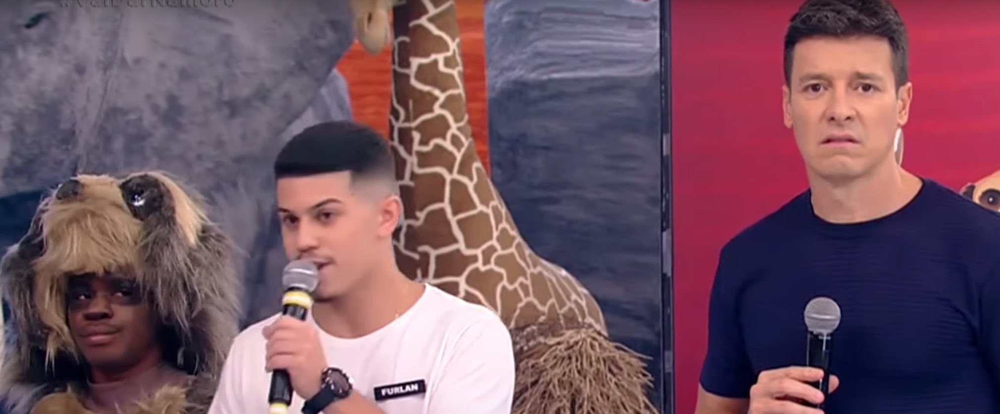

O objetivo desta atividade é você reproduzir esta página em HTML, e estilizá-la em CSS.
Crie um novo arquivo main.html em algum lugar do seu computador, e abra-o com o Sublime Text.
Depois, abra uma tag e comece a montar uma página HTML que seja idêntica (em relação à estrutura) à página atual.
Crie também um arquivo main.css, e linke-o ao HTML. No arquivo CSS você vai definir o estilo da página (fontes, cores, tamanhos, etc).
Não deixe passar nada: copie a fonte, os parágrafos, as ênfases ( negrito e itálico ), as imagens, as tabelas, tudo!
A estilização em CSS é por sua conta: você pode usar os recursos que achar melhor. Como sugestão, comece pela lista abaixo:
Qual cantada do Vai Dar Namoro mais combina com você?
| Nome | Áudio |
| UUUUiiii | link |
| Ele gosta | link |
| Tome | link |
| Dança gatinho, dança! | link |